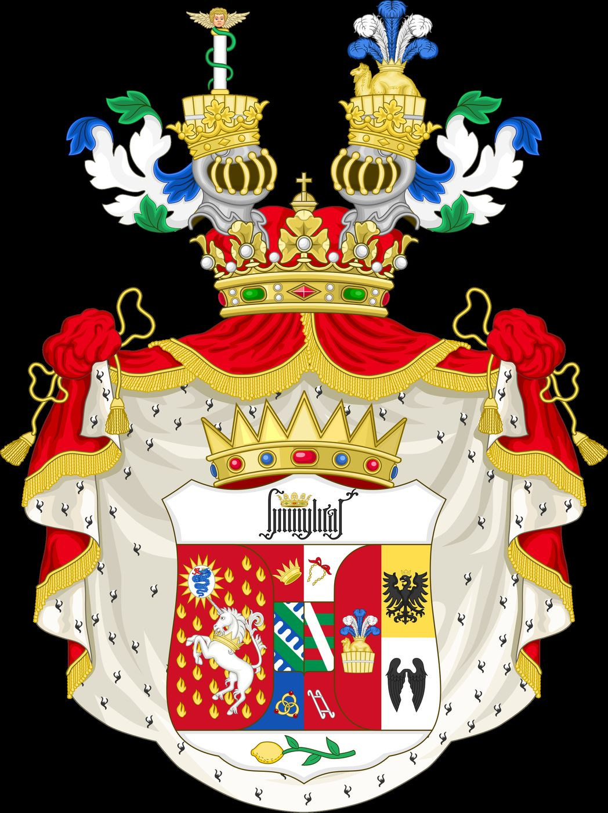
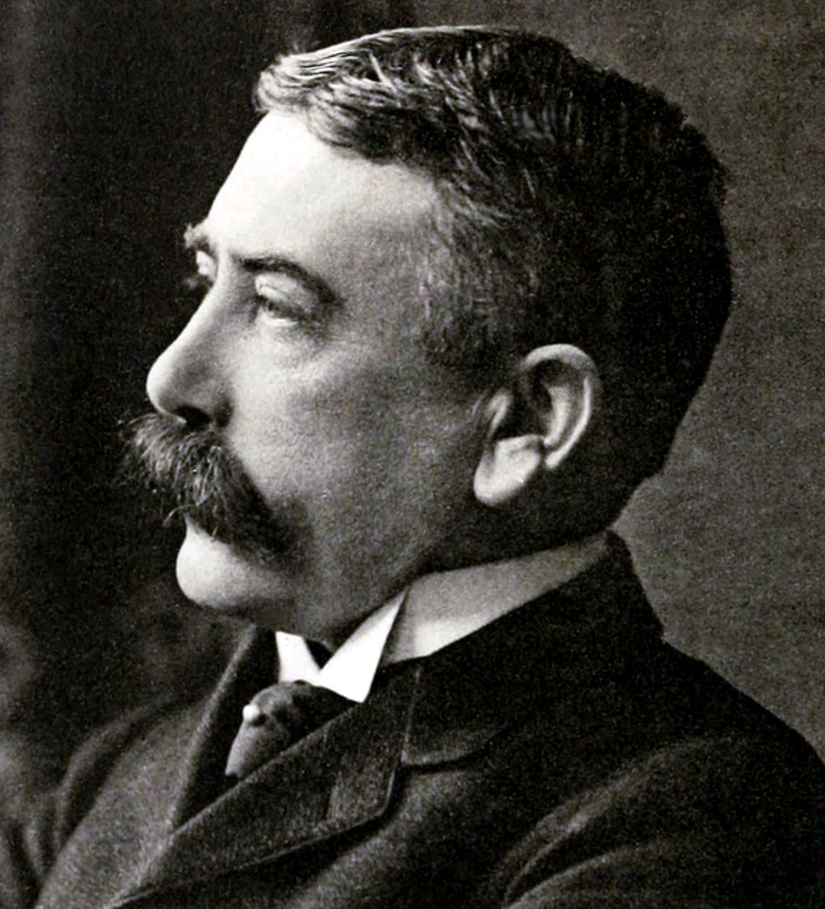

Cet essai a d’abord paru en turc. La version française est de ma main. Les textes de Lacan sont cités dans l’original français. Les textes de Freud sont cités sous leurs titres français usuels, avec l’année de première publication.


Dans la langue il n’y a que des différences sans termes positifs.
Ferdinand de Saussure, Cours de linguistique générale (1916)
I
Lacan exposa pour la première fois ouvertement les trois ordres le 8 juillet 1953, dans une conférence intitulée Le symbolique, l’imaginaire et le réel, donnée à la première réunion scientifique de la Société française de psychanalyse, tout juste fondée.1 La date n’est pas un hasard. En juin de la même année, Lacan et un groupe d’analystes, dont Daniel Lagache et Françoise Dolto, avaient quitté la Société psychanalytique de Paris après de vifs différends sur la structure de l’institution de formation et sur la technique de Lacan. La conférence, dans le sillage de cette rupture, est comme le programme d’un nouveau commencement ; elle est la préface du texte qu’il présenterait quelques mois plus tard à Rome, le manifeste du projet qu’il appela le « retour à Freud ».
Les causes de la rupture étaient à la fois institutionnelles et personnelles. La Société psychanalytique de Paris, sous la direction de Sacha Nacht, voulait lier la formation des analystes à une structure institutionnelle rigide, semblable à celle des facultés de médecine ; Lagache et ses amis pensaient que cette structure bureaucratiserait la formation. Lacan était en outre soumis à de lourdes critiques pour sa technique, qui raccourcissait la séance standard de cinquante minutes et réglait la durée de la séance sur le flux de la parole. La Société française de psychanalyse, nouvellement fondée, passerait dix ans à tenter d’être admise à l’Association psychanalytique internationale, et en 1963 un compromis fut atteint au prix du retrait de Lacan de la liste des analystes didacticiens.2 La théorie des trois ordres est née au début de ces années agitées, au milieu d’une scission institutionnelle. Dans la longue allocution qu’il prononça à Rome en septembre 1953, « Fonction et champ de la parole et du langage en psychanalyse », Lacan proclama comme programme le primat du symbolique : le seul instrument de la psychanalyse est la parole, et l’inconscient est ce chapitre de l’histoire du sujet qui est marqué par un blanc ou occupé par un mensonge, le chapitre censuré.3
L’ordre de la conférence est significatif : le symbolique vient en premier. L’enseignement de Lacan dans les années 1950 repose sur le primat de l’ordre symbolique, et ce primat est aussi le fondement de sa critique de la psychologie du moi américaine. La psychologie du moi définissait le but de l’analyse comme le renforcement du moi ; Lacan voyait le moi comme une structure imaginaire, une aliénation, et soutenait que l’analyse devait viser à ce que le sujet assume sa place dans l’ordre symbolique, sa propre parole et son histoire. Prendre les trois ordres un à un permet de mieux comprendre pourquoi cette dispute fut si vive.
II
L’ordre imaginaire est l’ordre des images, des identifications et des relations de ressemblance. Lacan a développé cet ordre à travers le concept de stade du miroir, sa première contribution originale. Dans le texte qu’il présenta pour la première fois au congrès international de psychanalyse de Marienbad en 1936 et réécrivit à Zurich en 1949, il décrit le moment où un nourrisson de six à dix-huit mois reconnaît avec joie son image dans le miroir.4 À cet instant, le nourrisson, encore dans une expérience morcelée, incapable de coordonner son corps, se voit dans le miroir comme une image unifiée. L’identification à cette image constitue le fondement du moi ; mais l’identification repose sur une illusion. Le moi se constitue en dehors du sujet, dans une image.
Que l’imaginaire ne soit pas propre à l’être humain, qu’il descende jusqu’à la biologie des vivants, la génération de Lacan l’apprenait d’une science nouvelle, l’éthologie. L’Autrichien Konrad Lorenz avait montré que les oisons cendrés qui viennent d’éclore adoptent comme mère le premier être mobile qu’ils voient, fût-ce lui-même, et ne le quittent plus ; il appela ce phénomène l’empreinte, en allemand Prägung. Le Néerlandais Niko Tinbergen observa que les épinoches mâles attaquent leurs rivaux dont le ventre devient rouge à la saison de la reproduction, mais attaquent avec la même violence un grossier modèle qui ne ressemble en rien à un poisson quand son dessous est peint en rouge.5 Ce qui met l’animal en mouvement n’est pas l’être qu’il a devant lui, mais une image, une couleur, une forme ; dans certaines conditions, il ne fait aucune différence entre un vrai rival et un morceau de bois. Dans de telles trouvailles, Lacan voit une preuve biologique du pouvoir de l’image de captiver un vivant. Ce qui distingue l’être humain de l’animal n’est pas qu’il échappe à cette captivité imaginaire, mais qu’un autre ordre, celui du langage et de la loi, s’y ajoute. L’image qui fascine le nourrisson au stade du miroir est une parente de la tache rouge qui met l’épinoche en attaque ; mais le nourrisson assume cette image avec un nom, une parole, la confirmation d’un adulte.
L’ordre imaginaire est l’ordre des relations où nous nous comparons aux autres, les admirons ou les envions. Ces relations sont par nature duelles et tendues : mon semblable est à la fois un modèle et un rival. L’agressivité, la rivalité et la fragilité narcissique sont les expériences caractéristiques de cet ordre. La conférence de Lacan sur l’agressivité en 1948 montre que cette tension est une conséquence directe de la relation spéculaire : mon semblable, qui se tient là où je veux être, est la personne que j’admire et que je hais à la fois.
Comment l’imaginaire et le symbolique fonctionnent ensemble, Freud l’avait montré bien avant Lacan, dans son livre de 1921 sur la psychologie des foules. Pour Freud, une foule est une communauté dont chaque membre a mis le même objet, un chef ou une idée, à la place de son propre idéal du moi, et s’identifie donc aux autres au niveau de son moi.6 Ce qui lie les membres d’une foule est leur ressemblance mutuelle, le fait de répéter les mêmes slogans, de porter les mêmes couleurs ; c’est un lien imaginaire, la relation spéculaire multipliée. Mais cette ressemblance repose sur le fait que tous regardent depuis le même lieu, celui de l’idéal du moi occupé par le chef ; et c’est un lieu symbolique. La distinction que Lacan ferait plus tard entre moi idéal et idéal du moi est une réécriture explicite de ce schéma de Freud. Les membres qui se ressemblent d’une communauté de supporters, d’un mouvement politique, d’une secte ne se reconnaissent que sous le même regard, autour du même nom.
III
L’ordre symbolique est l’ordre du langage, de la loi et des structures sociales. Lacan a théorisé cet ordre en s’appuyant sur deux grandes sources structuralistes. La première est le Cours de linguistique générale de Ferdinand de Saussure, rassemblé et publié par ses élèves en 1916 après sa mort. Saussure définit le signe linguistique comme un lien arbitraire entre un signifiant, une image acoustique, et un signifié, un concept, et dit, dans la phrase que j’ai prise en épigraphe, que dans la langue il n’y a que des différences, sans termes positifs. Le sens d’un mot ne vient pas d’une essence qu’il porterait en lui, mais de sa différence d’avec les autres mots.7 Lacan radicalise cette idée : le signifiant a la primauté sur le signifié ; le sens naît à l’intérieur de la chaîne des signifiants, de leurs positions les uns par rapport aux autres.
Lacan montre cette primauté dans son texte de 1957, « L’instance de la lettre dans l’inconscient ou la raison depuis Freud », par un dessin qu’il met à la place du célèbre schéma de l’arbre de Saussure. Pour illustrer le signe, Saussure avait mis au-dessus d’une barre le dessin d’un arbre et au-dessous le mot « arbre ». Lacan dessine au-dessus de la barre deux portes identiques côte à côte et écrit au-dessous deux mots : Hommes et Dames. Les portes sont exactement semblables ; la seule chose qui les rend différentes est le mot qu’elles portent. À ce dessin Lacan ajoute une petite histoire : dans un train, un garçon et une fille sont assis face à face et regardent par la fenêtre tandis que le train entre en gare. « Tiens, dit le frère, nous sommes à Dames ! — Imbécile, répond sa sœur, tu ne vois donc pas que nous sommes à Hommes. »8 Les deux enfants regardent le même point du même quai ; mais chacun, depuis la place qu’il occupe, ne peut voir que le nom de l’autre porte. Pour Lacan, même la différence sexuelle, avant d’être une anatomie, s’établit en passant par la porte d’un signifiant, par un nom plaçant le sujet quelque part. Le signifié, les toilettes elles-mêmes, est le même derrière les deux portes ; ce qui sépare les sujets est la frontière que trace le signifiant.


La seconde source est l’anthropologie structurale de Claude Lévi-Strauss. Ses Structures élémentaires de la parenté, publiées en 1949, avaient montré que les sociétés humaines s’organisent non par des lois biologiques mais symboliques, avant tout par l’interdit de l’inceste et l’échange des femmes entre les groupes. Dans l’essai qu’il publia la même année, « L’efficacité symbolique », il examine un long chant entonné par un chaman du peuple cuna de Panama lors d’un accouchement difficile, et soutient que le chant agit en donnant à la douleur corporelle de la femme un mythe, un sens et un ordre ; et il compare ouvertement ce processus au traitement psychanalytique.9 Pour Lacan, cet essai est une confirmation anthropologique du principe sur lequel repose la psychanalyse, qu’une parole, un symbole, peut agir sur le corps lui-même.
Pour Lacan, le sujet humain est placé dans cet ordre symbolique dès sa naissance, avant même sa naissance. Son nom, sa lignée, les attentes de sa famille et la langue elle-même déterminent d’avance qui le sujet sera. La face de cet ordre qui se tourne vers le sujet est ce que Lacan appelle le grand Autre. L’ordre symbolique apporte un tiers terme qui règle les tensions duelles de l’imaginaire : une rivalité mortelle entre deux personnes peut être réglée par une loi, un contrat, une parole. La célèbre formule de Lacan à cette époque, selon laquelle l’inconscient est structuré comme un langage, est le correspondant clinique de cette pensée.
L’entrée dans l’ordre symbolique a un prix, et dans le Discours de Rome Lacan le dit en une brève formule : le symbole se manifeste d’abord comme meurtre de la chose.10 Quand on donne un nom à une chose, on peut parler d’elle même quand elle n’est plus là. Le mot tient la place de la chose en son absence ; mais pour cette raison même, il supprime en quelque mesure la chose elle-même. Un enfant qui peut dire « maman » peut l’appeler quand elle n’est pas dans la pièce ; mais maintenant un mot, un nom, une langue s’est interposé entre lui et sa mère. Le sujet qui entre dans le langage accède au monde non directement, mais par la médiation des mots. L’ordre symbolique apporte une loi qui règle les tensions duelles de l’imaginaire, mais il apporte aussi une perte qui met une distance entre le sujet et toute chose. Le réel est le nom du lieu que cette perte laisse derrière elle, que le langage ne peut jamais entièrement refermer.
À quel point l’entrée dans l’ordre symbolique est un processus fragile, un cas raconté dans le premier séminaire de Lacan le montre. En mars 1954, Rosine Lefort, élève de Lacan, présenta au séminaire un garçon de quatre ans avec lequel elle travaillait, Robert. Robert avait été trimbalé d’une institution à l’autre depuis sa naissance, et avait grandi négligé, affamé, dans une grave carence. Il ne parlait presque pas ; deux mots seulement sortaient de sa bouche : « Madame ! » et « Le loup ! » Ce second mot, il le répétait comme un cri dans les moments où il se menaçait lui-même ou menaçait les autres. À un stade de son travail, Lefort raconte qu’une nuit Robert tenta de se couper le pénis avec des ciseaux, et qu’un autre jour, dans le bain, dans l’eau, il cria son nom comme pour se baptiser loup.11 Dans ce cas, Lacan voit un monde où l’ordre symbolique n’a pas atteint un enfant, et où ne lui reste qu’un seul mot, un cri, une menace. Le mot « loup » n’est pas pour Robert un élément d’une chaîne de signifiants ; c’est un mot qui doit porter seul toute une langue, et qui par là ne dit rien. Le travail de Lefort est l’effort d’accompagner le lent tissage d’autres mots, d’autres noms, autour de ce mot unique.
IV
Le réel est le plus difficile à saisir des trois ordres, puisque par définition il est ce qui résiste à la saisie. Le réel de Lacan ne doit pas être confondu avec la « réalité » au sens courant. La réalité est un monde formé et doté de sens par les ordres symbolique et imaginaire ; le réel est ce qui reste en dehors de cette mise en sens, ce qui résiste à la symbolisation. Lacan définit le réel de manière différente à des époques différentes. Dans les années 1950, le réel est un reste qui revient toujours à la même place, qui s’impose avec insistance, si l’on tente de le symboliser. En expliquant cette définition, Lacan regarde le ciel : dans toute l’histoire de la science, l’exemple le plus pur du réel a été les étoiles qui reviennent chaque nuit à la même place, les planètes qui reviennent à la même position à intervalles réguliers. Les corps célestes ne parlent pas, ne demandent rien, ne bougent pas selon un désir ; ils reviennent seulement à leurs places. Son correspondant en psychanalyse est ce qui revient, dans la vie du sujet, contre son gré, chaque fois à la même place, à la même scène, à la même perte. À partir des années 1960, Lacan définit le réel comme l’impossible : ce qui ne peut être ni dit ni imaginé, et pourtant continue de produire ses effets.
Une des propositions les plus surprenantes de Lacan sur le réel est que rien n’y manque. Dans son deuxième séminaire, il définit le réel comme une plénitude sans interruption, sans fissure.12 Le manque n’entre dans le monde qu’avec le symbolique. Pour que nous remarquions qu’à un dîner une chaise est vide, que quelqu’un n’est pas venu, il faut que cette chaise ait été réservée à quelqu’un, qu’une place ait été préparée à la table. Dans le réel, il n’y a qu’une chaise ; son vide ne devient un vide que dans l’ordre symbolique, qui la lie à un nom, une attente, un tour. Cela explique aussi pourquoi le réel est si difficile à penser. Le langage fonctionne par le manque ; nommer quelque chose, c’est le penser par sa différence d’avec les autres choses, avec les lieux où il n’est pas. Le réel est ce qui se tient avant ou au-delà de ces différences, de cette absence, et ne rentre pas dans les fentes du langage.
Une rencontre avec le réel est le plus souvent vécue comme une expérience traumatique. Un traumatisme est une rencontre où les ressources symboliques et imaginaires que le sujet possédait jusque-là ne suffisent pas à donner sens à ce qui est vécu. Dans son onzième séminaire de 1964, Lacan nomme cette rencontre par le concept de tuché, emprunté à Aristote : une rencontre inattendue et inévitable avec le réel, une rencontre chaque fois un peu manquée. Lacan raconte cette rencontre dans le même séminaire à travers le rêve qui ouvre le chapitre VII de L’Interprétation du rêve de Freud. Un père a perdu son enfant, qu’il avait veillé des jours durant. Il est allé dormir dans la pièce voisine de celle où repose le corps, laissant la porte ouverte ; un vieil homme veille près des bougies, à côté de l’enfant mort. Dans son rêve, le père voit son enfant debout près de son lit, qui le prend par le bras et lui murmure sur un ton de reproche : Père, ne vois-tu donc pas que je brûle ? Il se réveille et court dans la pièce d’à côté : le vieux veilleur s’est endormi, et une bougie tombée a mis le feu au linceul et au bras de l’enfant.13 Freud lit le rêve comme l’accomplissement du souhait du père de prolonger le sommeil de quelques secondes encore, de voir son enfant une fois de plus vivant. Lacan attire l’attention sur le réveil lui-même. Le père se réveille à cause de l’insupportable de la phrase du rêve ; mais en s’éveillant, il rencontre le vrai réel, qu’il n’a pu sauver son enfant, une perte que rien ne ramènera. Le réel se tient en ce lieu que ni le rêve ni la veille n’attrapent tout à fait, entre les deux scènes. Le réveil ne le trouve pas, il le manque. Dans la psychose, en revanche, selon la formule que Lacan reprend de Freud, ce qui n’a pas trouvé d’inscription dans l’ordre symbolique revient dans le réel, sous forme d’hallucination ou de délire.
À quelle expérience concrète correspond ce concept, bien des gens en Turquie l’ont appris dans leur propre vie après les séismes du 6 février 2023. La destruction en une seule nuit de maisons, de rues, de villes, des êtres aimés restés sous les décombres, toutes les coordonnées du monde familier disparaissant en quelques minutes, est l’une des formes les plus nues de rencontre avec ce que Lacan appelle le réel. L’une des phrases que les rescapés du séisme disaient le plus dans les premières semaines et les premiers mois portait sur ce qu’ils ne pouvaient raconter : ils ne trouvaient aucun mot, aucun ordre, aucun sens qui convienne à ce qu’ils avaient vécu. Comme le savent les cliniciens qui travaillent avec cette expérience, la guérison n’abolit pas ce réel ; mais peu à peu des mots, des noms, des rituels, des souvenirs peuvent se tisser autour de lui. Le deuil et le témoignage tentent de coudre avec le fil du symbolique les bords de la fente que le réel a ouverte, sans fermer la fente.
V
L’évolution de l’enseignement de Lacan peut se lire pour une large part comme une repensée du rapport entre les trois ordres. Dans les années 1950, le symbolique avait la priorité ; Lacan soulignait que l’inconscient est structuré comme un langage et que le travail analytique progresse par la parole. À partir des années 1960, le réel prit une place de plus en plus centrale : des concepts comme l’objet cause du désir, la jouissance et la pulsion désignaient un reste, un résidu que l’ordre symbolique ne pouvait englober tout entier. Dans les années 1970, Lacan tendit à penser les trois ordres à poids égal et interdépendants, et trouva une figure pour exprimer cette pensée.
Lacan présente le nœud borroméen à son auditoire le 9 février 1972, dans son séminaire ...ou pire ; selon son propre récit, il en avait eu connaissance la veille, lors d’un dîner avec un auditeur qui suivait les cours du mathématicien Georges-Théodule Guilbaud.14 Le nœud tient son nom des trois anneaux des armes de la famille italienne des Borromée et a une propriété simple mais étonnante : aucun des trois anneaux ne passe à travers un autre, mais les trois ensemble sont liés de façon indissociable ; quand l’un quelconque des anneaux est coupé, les deux autres sont libérés aussi. Dans cette figure, Lacan trouve l’expression complète du rapport des trois ordres : aucun n’est réductible aux autres, et aucun n’est indépendant des autres. Le séminaire de 1974–1975, R.S.I., tient son nom directement des trois ordres ; dans le séminaire suivant, Le Sinthome, Lacan demande ce qui tient ensemble les trois ordres, et répond par un quatrième rond, l’invention singulière du sujet, le sinthome.15
VI
Les trois ordres offrent un cadre puissant pour lire l’expérience clinique à différents niveaux. La dimension imaginaire recouvre l’image qu’une personne a d’elle-même, ses comparaisons avec les autres, ses envies et ses blessures narcissiques ; la question « Pourquoi ne puis-je être comme lui ? » appartient à cet ordre. La dimension symbolique recouvre l’histoire familiale d’une personne, la manière dont elle a été nommée, ses rôles sociaux et la façon dont le langage la positionne ; la question « Qu’attend-on de moi, à la place de qui suis-je ? » appartient à cet ordre. La dimension réelle recouvre les expériences qui ne peuvent se mettre en mots, les traumatismes, les impositions du corps et l’angoisse ; le lieu où l’analysant dit « je n’arrive pas à le dire », « les mots ne suffisent pas » pointe souvent vers le réel.
La séance analytique elle-même fonctionne à l’intérieur de ces trois ordres. Dans son deuxième séminaire, Lacan dit que la parole de l’analysant tourne souvent sur l’axe imaginaire, l’axe d’un moi qui parle à l’analyste comme un moi, et que cet axe, comme un mur, un « mur du langage », coupe la parole de l’inconscient. L’analysant s’explique, se défend, cherche l’approbation de l’analyste, tente de deviner ce qu’il pense ; quelle que soit la sincérité de cette parole, elle voile la parole que le sujet ignore. L’intervention de l’analyste tente de franchir ce mur : attirer l’attention sur le double sens d’un mot, rendre un lapsus, ponctuer une phrase en son milieu sont des tentatives de faire passer la parole de l’analysant de l’axe imaginaire à l’axe symbolique. La fin de la séance, surtout dans les séances à durée variable de Lacan, peut devenir la forme la plus radicale de cette intervention : une coupure qui vient à un moment où l’analysant ne l’attend pas, avant que l’écho d’une parole ne soit éteint. La coupure ne complète pas le sens de ce qui a été dit ; elle le laisse ouvert, et appelle l’analysant, après la séance aussi, à penser autour de cette fente.
Ces trois dimensions peuvent s’entrelacer jusque dans un seul symptôme. Une crise d’angoisse peut être liée à la fois à un sentiment de rapetissement devant le regard d’un autre dans l’ordre imaginaire, à la peur de ne pouvoir répondre à une attente familiale dans l’ordre symbolique, et à un trouble innommable du corps dans le réel. Le travail analytique prête attention à chacune de ces trois dimensions : desserrer les fixations imaginaires, interroger les positions symboliques et trouver un mot, une limite, une forme aux rencontres avec le réel sont des aspects inséparables du processus psychanalytique.
Le deuil est l’expérience où les trois ordres se touchent le plus clairement. Quand nous perdons quelqu’un, un trou s’ouvre d’abord dans le réel : quelqu’un qui était là n’y est plus, sa voix ne s’entend plus, sa chaise est vide, son téléphone ne sonne pas. Dans ses leçons sur Hamlet, Lacan définit le deuil exactement ainsi : un trou qui s’ouvre dans le réel et met en mouvement tout l’ordre signifiant du sujet.16 Pour combler ce trou, l’ordre symbolique entre en jeu : les obsèques, les prières, les visites de condoléances, un nom gravé sur une pierre tombale, les paroles dites après le mort. Les rituels de deuil de chaque culture sont des tentatives de marquer symboliquement la place du mort, de lier la perte à une parole et à un temps. L’ordre imaginaire porte l’image de ce qui est perdu : photographies, souvenirs, avoir l’impression de le voir un instant à un coin de rue. Le deuil prend peu à peu fin quand ces trois ordres sont à nouveau noués, quand l’image du perdu devient un souvenir, le nom un symbole, et que le trou dans le réel n’engloutit plus toute la vie. Là où le deuil ne peut s’achever, le nœud reste défait en quelque point. C’est ce qu’enseigne le nœud borroméen : un changement fait à un rond affecte les deux autres ; et le monde du sujet tient ensemble ou se disloque selon la manière dont ces trois ronds sont noués.
Le réel, le symbolique et l’imaginaire sont peut-être le cadre le plus durable que Lacan ait proposé pour penser l’expérience humaine. La suite qui commençait en 1953 par le symbolique devient, vingt ans plus tard, avec l’abréviation R.S.I., une suite qui commence par le réel ; ce changement est un petit mais significatif signe du déplacement du centre de gravité de l’enseignement de la parole vers le lieu que la parole ne peut combler. La psychanalyse travaille dans chacune de ces trois dimensions et dans les liens entre elles. La valeur de ce cadre tient à son refus de réduire l’être humain à une dimension : un être humain n’est ni seulement une image, ni seulement un langage, ni seulement un corps. Un psychanalyste, en écoutant quelqu’un, se demande dans laquelle des trois dimensions quelque chose s’est bloqué, dans laquelle quelque chose déborde, laquelle ne peut plus porter les autres. La question est posée non pour poser un diagnostic, mais pour comprendre comment le sujet noue son propre nœud.
Notes
- J. Lacan, « Le symbolique, l’imaginaire et le réel » (1953), in Des Noms-du-Père, Paris, Seuil, 2005. ↩︎
- Pour une histoire détaillée de la rupture et de la décennie qui suivit, voir E. Roudinesco, Histoire de la psychanalyse en France, t. 2 (1925–1985), Paris, Seuil, 1986. En 1964, Lacan fonda sa propre école, l’École freudienne de Paris. ↩︎
- J. Lacan, « Fonction et champ de la parole et du langage en psychanalyse » (1953), in Écrits, Paris, Seuil, 1966. Selon les mots de Lacan, l’inconscient est « ce chapitre de mon histoire qui est marqué par un blanc ou occupé par un mensonge : c’est le chapitre censuré ». ↩︎
- J. Lacan, « Le stade du miroir comme formateur de la fonction du Je » (1949), in Écrits (1966), p. 93–100. ↩︎
- K. Lorenz, Er redete mit dem Vieh, den Vögeln und den Fischen (1949) ; en français : Il parlait avec les mammifères, les oiseaux et les poissons ; N. Tinbergen, The Study of Instinct, Oxford, Clarendon Press, 1951. Pour ces travaux, Lorenz et Tinbergen partagèrent, avec Karl von Frisch, le prix Nobel de physiologie ou médecine de 1973. ↩︎
- S. Freud, Psychologie des foules et analyse du moi (1921), chapitre VIII. Freud montre aussi cette définition par un schéma : des moi parallèles se rencontrent, avec des flèches dirigées vers le même objet extérieur, dans un idéal du moi commun. ↩︎
- F. de Saussure, Cours de linguistique générale (1916), éd. C. Bally et A. Sechehaye. ↩︎
- J. Lacan, « L’instance de la lettre dans l’inconscient ou la raison depuis Freud » (1957), in Écrits, Paris, Seuil, 1966. Lacan raconte l’histoire pour montrer que chacun des deux enfants, depuis la place où il est assis, ne peut voir que le nom du sexe opposé, et que la différence sexuelle aussi s’établit en passant par la porte d’un signifiant. ↩︎
- C. Lévi-Strauss, Les structures élémentaires de la parenté (1949) ; « L’efficacité symbolique », Revue de l’histoire des religions 135 (1949). ↩︎
- Lacan, « Fonction et champ de la parole et du langage en psychanalyse » (1953), in Écrits : « le symbole se manifeste d’abord comme meurtre de la chose ». Au même endroit, Lacan ajoute que cette mort rend possible la perpétuation du désir du sujet ; la pensée repose sur l’idée hégélienne que le concept est le temps de la chose, et sur l’interprétation qu’en donne Kojève. ↩︎
- J. Lacan, Le Séminaire, livre I : Les écrits techniques de Freud (1953–1954), Paris, Seuil, 1975, exposé de Rosine Lefort et commentaire de Lacan, dans le chapitre « L’enfant au loup ». Le travail de Lefort a été publié ensuite, avec Robert Lefort, sous le titre Les structures de la psychose : L’enfant au loup et le Président (Paris, Seuil, 1988). ↩︎
- J. Lacan, Le Séminaire, livre II : Le moi dans la théorie de Freud et dans la technique de la psychanalyse (1954–1955), Paris, Seuil, 1978. Dans le même séminaire, Lacan souligne que le manque n’entre dans le monde qu’avec l’ordre symbolique, c’est-à-dire avec l’existence d’une place et d’un nom. ↩︎
- S. Freud, L’Interprétation du rêve (1900), chapitre VII. La phrase du rêve est, dans le texte allemand, Vater, siehst du denn nicht, daß ich verbrenne? Freud dit tenir le rêve d’une patiente, qui l’avait entendu lors d’une conférence. Lacan interprète longuement le rêve dans Le Séminaire, livre XI, dans les leçons du début de 1964. ↩︎
- J. Lacan, Le Séminaire, livre XIX : ...ou pire (1971–1972), Paris, Seuil, 2011, leçon du 9 février 1972. Lacan dit que le nœud lui allait, pour ainsi dire, comme une bague au doigt. ↩︎
- J. Lacan, Le Séminaire, livre XXII : R.S.I. (1974–1975), Ornicar ? 2–5 (1975) ; Le Séminaire, livre XXIII : Le sinthome (1975–1976), Paris, Seuil, 2005. ↩︎
- J. Lacan, Le Séminaire, livre VI : Le désir et son interprétation (1958–1959), Paris, La Martinière, 2013, leçons consacrées à Hamlet. Au même endroit, Lacan lit les obsèques bâclées dans Hamlet, la façon dont Polonius et Ophélie sont enterrés, comme le correspondant tragique du deuil non accompli symboliquement. ↩︎
Bibliographie
- Freud, S. (1900). L’Interprétation du rêve. PUF.
- Freud, S. (1921). Psychologie des foules et analyse du moi. In Essais de psychanalyse. Payot.
- Lacan, J. (1966). Écrits. Seuil. [« Le stade du miroir comme formateur de la fonction du Je » (1949) ; « L’agressivité en psychanalyse » (1948) ; « Fonction et champ de la parole et du langage en psychanalyse » (1953) ; « L’instance de la lettre dans l’inconscient » (1957).]
- Lacan, J. (1975). Le Séminaire, livre I : Les écrits techniques de Freud (1953–1954). Seuil.
- Lacan, J. (1978). Le Séminaire, livre II : Le moi dans la théorie de Freud et dans la technique de la psychanalyse (1954–1955). Seuil.
- Lacan, J. (1973). Le Séminaire, livre XI : Les quatre concepts fondamentaux de la psychanalyse (1964). Seuil.
- Lacan, J. (1975). Le Séminaire, livre XXII : R.S.I. (1974–1975). Ornicar ?, 2–5.
- Lacan, J. (2005). Le symbolique, l’imaginaire et le réel (1953). In Des Noms-du-Père. Seuil.
- Lacan, J. (2005). Le Séminaire, livre XXIII : Le sinthome (1975–1976). Seuil.
- Lacan, J. (2011). Le Séminaire, livre XIX : ...ou pire (1971–1972). Seuil.
- Lacan, J. (2013). Le Séminaire, livre VI : Le désir et son interprétation (1958–1959). La Martinière.
- Lefort, R. et Lefort, R. (1988). Les structures de la psychose : L’enfant au loup et le Président. Seuil.
- Lorenz, K. (1949). Er redete mit dem Vieh, den Vögeln und den Fischen. Borotha-Schoeler.
- Lévi-Strauss, C. (1949). Les structures élémentaires de la parenté. PUF.
- Lévi-Strauss, C. (1949). L’efficacité symbolique. Revue de l’histoire des religions, 135.
- Roudinesco, E. (1986). Histoire de la psychanalyse en France (t. 2). Seuil.
- Saussure, F. de (1916). Cours de linguistique générale (C. Bally et A. Sechehaye, éd.). Payot.
- Tinbergen, N. (1951). The Study of Instinct. Clarendon Press.